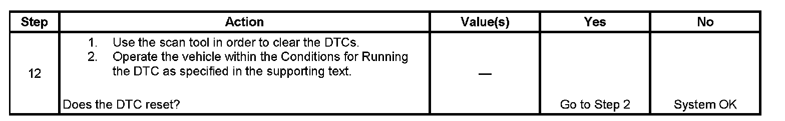

B0183
DTC B0183 or B0188
DTC DESCRIPTORS
DTC B0183 05
Solar Load Sensor 1 Circuit Short to Short to Battery or Open
DTC B0183 02
Solar Load Sensor 1 Circuit Short to Ground
DTC B0188 05
Solar Load Sensor 2 Circuit Short to Short to Battery or Open
DTC B0188 02
Solar Load Sensor 2 Circuit Short to Ground
CIRCUIT DESCRIPTION
The following DTCs are for the left and right sunload sensors.
- B0183 is for the left sunload sensor.
- B0188 is for the right sunload sensor.
The left and right sunload sensors provide the HVAC control module with inputs as to the amount heat load the sun is placing on the interior of the vehicle. The sunload sensors are photodiodes that are sensitive to light intensity. The body control module (BCM) applies 5 volts to internal input resistors that are connected to the left and right signal circuits of the sunload sensor assembly. The BCM provides ground to the sensors through the low reference circuit. The BCM monitors the voltage drops across the sunload sensors and converts the voltage values to count values where 1 volt is approximately equal to 51 counts. As the light intensity increases, the sunload sensors allow more current to travel through the circuits and the signal voltages decrease. As the light intensity decreases, the sunload sensors allow less current to travel through the circuits and the signal voltages increase. The BCM transmits the data to the HVAC control module over the GMLAN data circuit.
CONDITIONS FOR RUNNING THE DTC
The ignition is ON.
CONDITIONS FOR SETTING THE DTC
The BCM determines that the value of the sunload sensor signal is less than 5 counts or greater than 250 counts.
ACTION TAKEN WHEN THE DTC SETS
The action taken will be for the BCM to revert to a calibrated default value.
CONDITIONS FOR CLEARING THE DTC
- The DTC will become history if the BCM no longer detects a failure.
- The history DTC will clear after 100 fault-free ignition cycles.
- The DTC can be cleared with a scan tool.
TEST DESCRIPTION
Step 1 - Step 11:
Step 12:

The numbers below refer to the step numbers on the diagnostic table.
2. This step verifies that the value displayed is within the specified range.
3. This step tests for the proper operation of the circuit in the high voltage range.
4. This step tests for the proper operation of the circuit in the low voltage range. If the fuse in the jumper opens when you perform this test, the signal circuit is shorted to voltage.